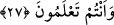

2. Sonunda Allah’a hamd etmek,
3. Yemekten önce ve sonra ellerini yıkamak,
4. Sol ayağını büküp sağını dikerek oturmak.
Şu dört şey de âdâbdandır:
1. Önünden yemek,
2. Lokmaları küçük küçük almak,
3. Ağza konan lokmayı güzelce çiğnemek,
4. Başkasının lokmasına bakmamak.
Şu iki şey şifadır:
1. Dökülen ekmek ve yemek kırıntılarını yemek,
2. Yemek kabını sıyırmak.
Şu iki şey mekruhtur:
1. Yemeği koklamak,
2. Yemeğe üflemek. Yemeğin soğumasını beklemeden sıcak sıcak yememelidir. Çünkü
lezzet yemeğin sıcağında, bereket ise soğuğundadır.
Allah’ın rızasını kazanmak için çalışan akıllı kişi, helâl rızık kazanmalı ve bu
nimetleri bahşeden Allah’a çok şükretmelidir. Allah’ın kulu üzerinde açık ve gizli pek
çok nimet ve lütfu vardır.
27. Ey îman edenler! Allah’a ve Peygamber’e hâinlik etmeyin; (sonra) bile bile
kendi emanetlerinize hainlik etmiş olursunuz.
“Ey îman edenler! Allah’a ve Peygamber’e hâinlik etmeyin.” Hıyanetin asıl mânâsı
noksanlık, vefânın ise tamam olmadır. Hıyanetin emânetin zıddı olarak kullanılması,
noksanlık mânâsı taşıdığı içindir. Çünkü bir adamın emanetine hıyanet ettiğin zaman
ondan bir şey eksiltmiş olursun.
Rivayete göre Rasûlullah (a.s.), Medîne’deki yahudi kabîlelerinden biri olan
Kureyzaoğulları’nı yirmi bir gece süreyle kuşatma altına aldı. Onlar, kardeşleri
Nadiroğulları gibi Şam taraflarında Ezreât ve Erîha’da oturan kardeşlerinin yanına
gitmek üzere Rasûlullah ile anlaşmak istediler. Rasûlullah bu teklifi reddedip Sa‘d b.
Muâz’ın haklarında vereceği karara göre hareket etmelerine müsaade edeceğini
bildirdi. Onlar Sa‘d’in hakemliğini kabul etmeyip kendilerine Ebû Lübâbe b.
Abdülmünzir’in gönderilmesini talep ettiler.
Ebû Lübâbe’nin Kurayza oğullarıyla arası iyiydi. Çünkü çocukları ve malları onların